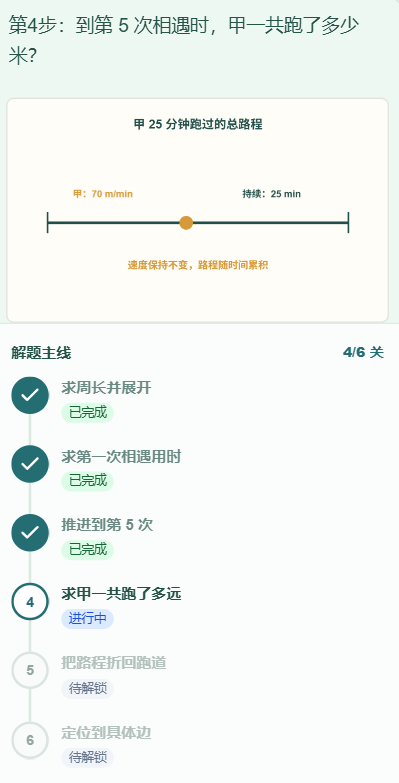
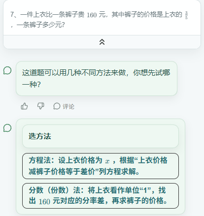

拍下问题
上传题目图片，选中要辅导的题；也可以从经典案例开始。
给孩子的一本，会回应的练习本
一道不会的题，不必急着翻到答案。
从观察图形，到说出自己的想法，
智绘老师陪孩子把解题思路一步步想明白。
AI 智能辅导 · 分步引导 · 可视化讲解

01 / 数学关系，看得见
面积怎样增加？两个人什么时候相遇？用图形承接问题，再让孩子自己推理。
以上为现有案例录屏，无语音讲解，说明文字在画面内。预置案例与拍题生成讲解是不同入口；具体题目的动画形式与可用性以实际体验为准。
02 / 从不会，到有思路
上传题目图片，选中要辅导的题；也可以从经典案例开始。
有多种可行解法时，从自己更容易理解的方法开始。
结合问题、提示和图示逐步推进，选错时继续理解关键关系。
完成后整理学习小结，把解题过程留作复习参考。

03 / 你可能想知道
适合希望理解问题、理清思路的学习者，以及提供学习陪伴的家长。具体题目的辅导效果以实际体验为准。
不保证。可视化服务于适合表达的知识与关系，具体形式取决于题目、步骤和生成结果。
本宣传站的 HTML/CSS 和公开展示素材。完整辅导应用、后端与模型配置不在此仓库中；代码和素材的授权范围请查看仓库说明。
AI 识题和讲解可能出错，关键结论应结合原题与老师的解释核对。产品不承诺提分或所有题型覆盖。
让孩子保留真正的思考
正式官网：exam.thinkmoon.cn